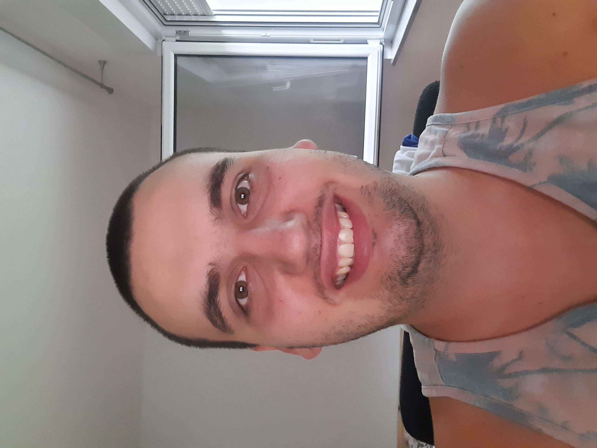

Christopher Tietz

Education:
- 09/2001 – 07/2014 Waldorfschule Rosenheim: Waldorfgraduation + extern graduation in the Realschule Bruckmühl
- 09/2015 – 08/2019 Vocational School Mechatronic with specialist SPS technique (every year 10 Weeks)
- 08/2023 - Now Complete Web Development Course from Udemy
Professional Practice:
- 14.10.2014 – 31.12.2014 Alternativ work at 3Con Corporation Austria
- 14.10.2014 – 31.12.2014 Alternativ work at 3Con Corporation Austria
- 01.09.2015 – 31.08.2019 Apprenticeship at 3Con Corporation Austria
- 01.09.2019 – 01.11.2020 Software development 3Con Corporation Austria
- 02.11.2020 – 24.06.2022 Software development 3Con Corporation Wixom (USA)
- 07.11.2022 – 11.11.2022 Troha Infinitus d.o.o
- 01.10.2022 – 31.12.2022 Tietz Roman Treuhand GmbH
- 26.01.2023 – Now Prvomajska Servis Zagreb